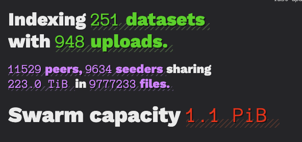
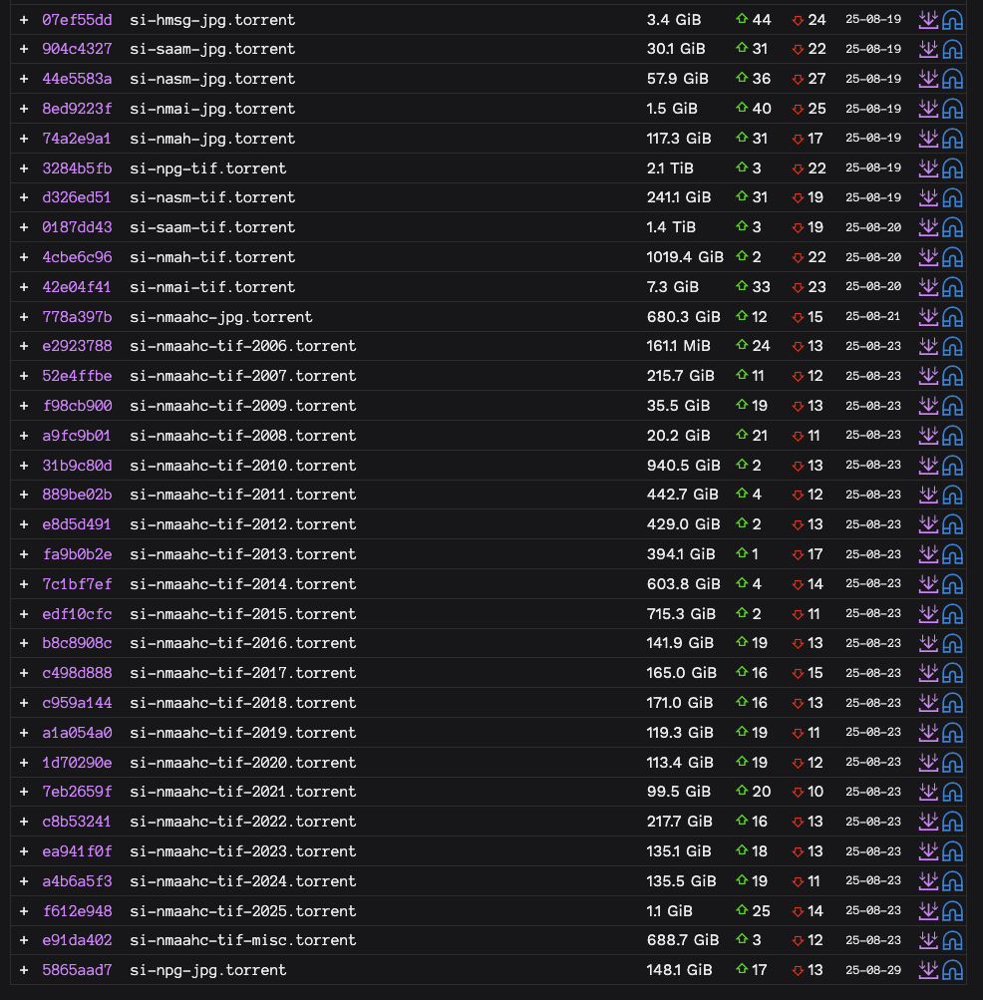
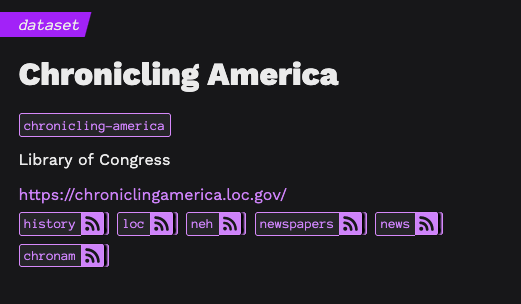
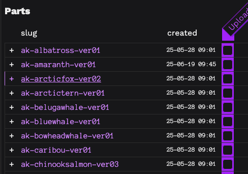
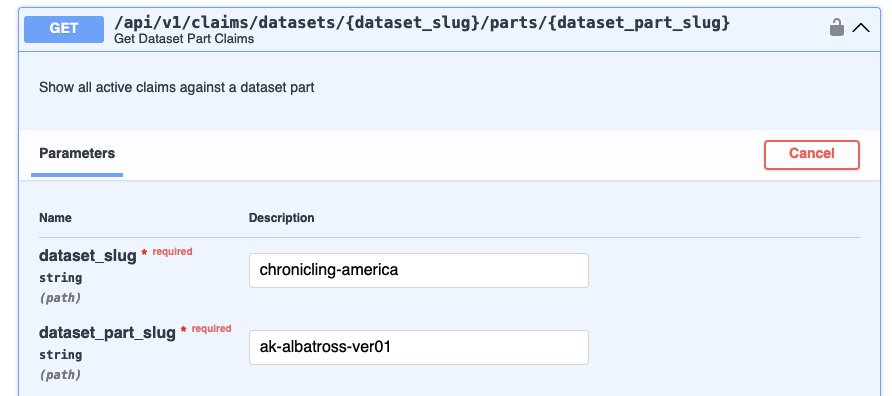
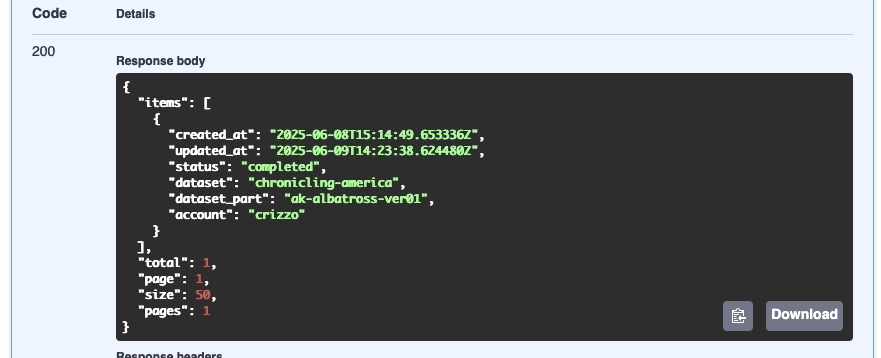

Current status

- Several dedicated independent institutional and amateur seedboxes launched
- A few "big wins" in datasets preserved, and continued progress on huge projects like climate data
- Vs. academictorrents: 298TB total uploads, 1310 torrents.
E.g. Smithsonian
"Let's revise history"
"How bout we don't"

The Kronkelianator!
Or, the kronkler, kronkelator, ...
Towards a distributed archive.org!
Say we need to preserve something fast... we may want to split it up in parts and let people take different parts...
Problems:
- How to distribute the scraping code?
- How to deduplicate scraping chunks
- How to validate the scrapes?
- How to pack and upload the scraped data?
Use sciop to coordinate the scrape!
Straight Up Kronkin' It 1: The Claims API
And by "it," haha well lets just say. my chronicle of american newspapers
- Create a Dataset
- Create some parts that represent the different chunks to scrape
- Let people claim the parts
- Use info about claims to coordinate what you should scrape
- Or, Let the server tell you what to scrape with a
/nextendpoint




Straight up Kronkin' It 2: The Scraper
sciop-scraping- Manage scrape state - incompletes, restarts, errors, etc.
- Get new subquests from the claims API
- ~ Do the Scraping ~
- Validate the scrape
- Create the torrent
- Upload the torrent to sciop and a bittorrent client
To Participate in the scrape, just....
python -m pip install sciop-scrape sciop-cli
sciop-cli login
sciop-cli client login
sciop-scrape chronicling-america --next
class ChroniclingAmericaQuest(Quest):
name = "chronicling-america"
dataset_slug = "chronicling-america"
spider = ChroniclingAmericaSpider
resume: bool = False
# hooks for each phase
def before_scrape(self, res: "QuestStatus") -> "QuestStatus": ...
# implement quest-specific behavior
def validate_scrape(self, res: QuestStatus) -> QuestStatus: ...
Use scrapy spiders!
class ChroniclingAmericaSpider(scrapy.Spider):
async def start(self) -> AsyncIterator[scrapy.Request]:
yield scrapy.Request(
manifest_url,
callback=self.parse_manifest
)
async def parse_manifest(response: TextResponse):
# some stuff to parse the manifest...
for url in to_scrape:
yield response.follow(
url,
callback=self.parse_file
)
E.g. Data Rescue Project
Manual annotation workflow on baserow.
Closed moderation and submission process.
Nice cataloguing and indexing project! Great metadata
Can only link to data - no means of dissemination

It's been 5 weeks
Government-hosted data was the first, easy target.
Amazon, Google, and Microsoft are demonstrating complete willingness to go along
Some critical datasets are so big they exist in literally one place
Without resolving the storage problem, foundational information about our world and cultural history will be lost.
Doing what we must with what we have
... welcome back bittorrent
... (she never left)
Recall our old friend merkle tree...

Torrent files are a json-like structure identified by the hash of their info dict
{
"announce": "udp://tracker.opentrackr.org:1337/announce",
"created by": "jonny",
"creation date": 1739162548,
"info": {
"file tree": {
"file.exe": {
"": {
"length": 10485760,
"pieces root": "\\g\x83\xee\x08\xfc\xcf\xd2Z\xd9\xdc\xdd\xca\xeb\x9a=:\x81*$\xf0\x855z5l\x18m3\xd5\xb0+"
}
}
},
"files": [{"length": 10485760, "path": ["file.exe"]}],
"meta version": 2,
"name": "subdir",
"piece length": 32768,
"pieces": "..."
},
"piece layers": { "...": "..." },
"whatever else": "anything"
}
Trackers are the indexing and social layer of bittorrent

Sciop is for bridging federation with p2p

Sciop today...

~ the go to the website interlude ~
sciop ships 378 lines, 65KB of javascript
------------------------------------------------------------------------------- Language files blank comment code ------------------------------------------------------------------------------- Python 97 1968 1210 9106 HTML 60 126 2 2394 CSS 11 317 23 2081 JavaScript 4 51 41 378 INI 1 25 1 93 SVG 4 0 1 64 Jinja Template 1 9 0 63 Mako 1 8 0 19 Markdown 1 1 0 2 JSON 1 0 0 1 ------------------------------------------------------------------------------- SUM: 181 2505 1278 14201 -------------------------------------------------------------------------------
~the fastapi/htmx stack~
fullstack on a budgetHATEOAS: Hypertext As The Engine Of Application State.
aka
instead of shipping a whole-ass operating system clientside,
- Put stuff on the page
- Make the page have links and buttons and whatever
- Clicking stuff makes the page have different stuff on it
e.g. lazy-loading collapsibles
<details>
<summary
class="collapsible-summary"
hx-get="/datasets/{{ dataset.slug }}/partial"
hx-trigger="click once"
hx-target="#dataset-{{ dataset.slug }}"
>
<div class="dataset" id="dataset-{{ dataset.slug }}"></div>
</details>
@datasets_router.get("/{dataset_slug}/partial")
async def dataset_partial(
dataset_slug: str,
request: Request,
dataset: RequireVisibleDataset,
):
return templates.TemplateResponse(
request,
"partials/dataset.html",
{"dataset": dataset}
)
(demo it)

e.g. search
<div class="page-header">
<h1>Datasets</h1>
<span
class="htmx-indicator loading-indicator"
id="datasets-loading-indicator">
<img src="/static/img/rings.svg"
alt="Loading indicator, a spinning ring"/>
</span>
</div>
<div class="container flex-container column">
<div class="row search-container" >
<input class="form-control search-input enter-trigger"
type="search"
name="query"
placeholder="Begin Typing To Search..."
hx-get="/datasets/search"
hx-trigger="input changed delay:250ms, load, enterKeyUp"
hx-target="#datasets-table"
hx-indicator="#datasets-loading-indicator"
hx-swap="innerHTML"
>
</div>
<div id="datasets-table" aria-live="polite">
</div>
</div>
@datasets_router.get("/search")
@jinja.hx("partials/datasets.html")
async def datasets_search(
query: str = None,
session: SessionDep = None,
current_account: CurrentAccount = None
) -> Page[DatasetRead]:
if not query or len(query) < 3:
stmt = (
select(Dataset)
.where(Dataset.visible_to(current_account) == True)
.order_by(Dataset.created_at.desc())
)
else:
stmt = (
Dataset.search(query)
.where(Dataset.visible_to(current_account) == True)
)
return paginate(conn=session, query=stmt)
(thats HTML and JSON baby)
Mixins for shared behavior
Searchable...
class Datasets(SearchableMixin):
__searchable__ = {"title": 10, "url": 5, "description": 1}
def search(self, query) -> "Select":
matches = cls.search_statement(query).cte("matches")
return (
select(cls)
.join(
matches,
onclause=getattr(cls, cls.primary_key_column()) == matches.c.rowid)
.order_by(matches.c.rank)
)
Single-source permissions.
Hybrid properties bridge DB and ORM
class Dataset(ModerableMixin):
@hybrid_method
def visible_to(self, account: Optional["Account"] = None) -> bool:
"""Whether this item is visible to the given account"""
if account is None:
return self.is_visible
elif not self.is_removed and not self.is_approved:
return self.account == account or account.has_scope("review")
else:
return False
@visible_to.inplace.expression
@classmethod
def _visible_to(cls, account: Optional["Account"] = None) -> ColumnElement[bool]:
return sqla.and_(
cls.is_removed == False,
sqla.or_(
cls.is_visible == True,
account.has_scope("review") == True,
cls.account == account,
),
)
Everything is WikiLike Now
automatically save full versions, including relations, on update
class EditableMixin():
@classmethod
def __init_subclass__(cls, **kwargs: Any) -> None:
"""Make virtual tables on class definition"""
@event.listens_for(cls, "after_mapper_constructed")
def _mapper_constructed(mapper: Mapper) -> None:
_make_mapped_history_table(mapper)
@staticmethod
def editable_session(session: Session) -> Session:
"""Event listener to create versions when flushing to DB"""
@event.listens_for(session, "after_flush")
def after_flush(session: Session, flush_context: UOWTransaction) -> None:
timestamp = datetime.now(UTC)
for obj in EditableMixin.editable_objects(session.new):
create_version(obj, session, flush_context, timestamp, new=True)
for obj in EditableMixin.editable_objects(session.dirty):
create_version(obj, session, flush_context, timestamp)
for obj in EditableMixin.editable_objects(session.deleted):
create_version(obj, session, flush_context, timestamp, deleted=True)
return session
Moderation
How do we make sure we're not sharing junk?
Soft security: allow submissions from anyone, but hide them until review

Moderation
Inline review items

Moderation
Account scopes integrated from the DB through the API

Scoping is complicated
"dataset needs to exist, dataset needs to be approved and not banned, update needs to match model schema, need a currently logged in account, account need to own the dataset or be a reviewer..."
How do we get to a coherent, usable, and performant interface like this?
@datasets_router.patch("/{dataset_slug}")
async def dataset_edit(
dataset_slug: str,
dataset_patch: Annotated[DatasetUpdate, Body()],
dataset: RequireVisibleDataset,
current_account: RequireEditableBy,
session: SessionDep,
request: Request,
response: Response,
) -> DatasetRead:
"""Edit a dataset!"""
updated_dataset = dataset.update(session, new=dataset_patch, commit=True)
if "HX-Request" in request.headers:
response.headers["HX-Redirect"] = f"/datasets/{updated_dataset.slug}"
return updated_dataset
Dependency Injection
A graph of operations s.t. each only happens once, and they only happen when requested
flowchart Session Session --> GetAccount GetAccount --> RequireAccount Session --> GetDataset GetDataset --> RequireDataset Session --> GetUpload GetUpload --> RequireUpload GetDataset --> RequireEditableItem GetUpload --> RequireEditableItem RequireAccount --> RequireVisibleDataset RequireDataset --> RequireVisibleDataset RequireAccount --> RequireEditableBy RequireEditableItem --> RequireEditableBy
def require_current_account(session: RawSessionDep, token: TokenDep) -> Account:
# do auth stuff
if not account:
raise HTTPException(401)
return account
RequireCurrentAccount = Annotated[Account, Depends(require_current_account)]
def require_current_editable_by(
current_account: RequireCurrentAccount, editable: RequireEditableItem
) -> Account:
if editable.editable_by(current_account):
return current_account
else:
raise HTTPException(401, "Not permitted to edit")
RequireEditableBy = Annotated[Account, Depends(require_current_editable_by)]
Side note: torrent parsing & creation in rust
p2p-ld/torrent-pyd~30x performance improvement where it matters

Federated Trackers...
New layers for the bittorrent stack

A lot of good ideas in bittorrent land...

...that never got implemented
.